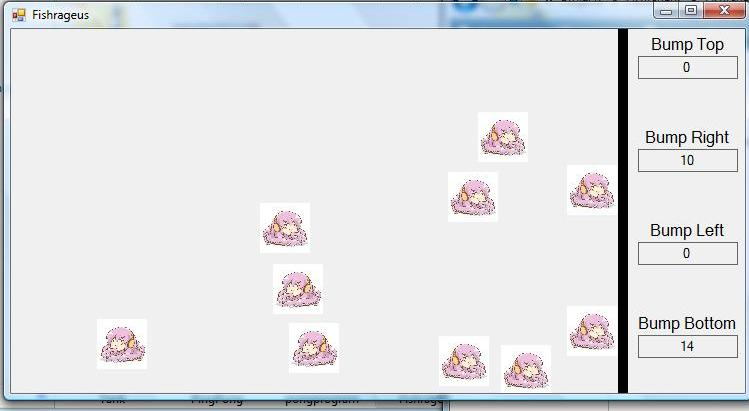

Projects
Click the Screenshot to download the program!
Main Page
N! Program
Fish Program
Fish Program 2
Tic-Tac-Toe
Star Field
Space Invaders
Tank Program
Pong Program
Fishrageus
Ochiru
First Semester
Second Semester
Date Assigned
Project Name
Project Description
Screen Shots
1/12/11
N!
This program find the inputted number's sequence and sum, factorial and product, the fibonacci sequence, the sequence of even numbers and sum, and the sequence of odd numbers and sum.
1/19/11
Fish Program
This program allows users to move the fish manually or automatically jumping from one picture box to another. The program keeps track on how much moves the fish makes and how much times the fish bumps right and left of the tank.
2/4/11
Fish Program 2
The fish program 2 is similar to number one but a predator is added. If the predator is in the same space as the fish, the fish is "dead". They can be moved automatically or manually. The speed can be changed. The movements are counted and the bumps on the tanks are counted also.
2/17/11
Tic-Tac-Toe
The Tic-Tac-Toe program simulates the classic game of tic-tac-toe. A row of the same symbol (X or O) will win.
3/14/11
Star Field
A copy of the screensaver where the user feels like he is moving through space. The labels or stars move diagonal to their quadrent's corner while increasing in size.
3/16/11
Space Invaders
Space invaders is a copy of the classic game where the ship at the bottom is controlled by the user. The object is to shoot all the invaders to win. The invaders move left and right, but moves down when they hit the side of the form.
4/1/11
Tank Program
The Tank Program allows the user to move their tank around the form with an enemy following it. The tank can shoot bullets to hit the enemy. After a certain amount of hits, the enemy dies.
4/20/11
Pong Program
The Pong Program is a simulation of the classic game Pong where the user (on the left) is playing a game of PingPong against the AI (on the right). Points are scored when the ball passes the paddle and hits the edge of the screen. After a certain amount of points, the player or AI will win.
4/28/11
Fishrageus
This is an advanced version of the previous fish programs. The fish are not restricted to picture boxes and can move more freely. The fish move using a timer, and the program keeps track of the bumps on the sides of the form.

4/18/11 - 6/9/11
Ochiru
This is my final project game called Ochiru. It is a platform game where the character has to survive as long as it can to get as much points as it can. The character will lose if it hits either the bottom or the top of the game. The platforms will continuously move upwards, so the character has to drop through the holes in the platform to stay alive. Items will randomly appear that will either help or setback your character: slow, stun, points, steal, fast, and obstacles.